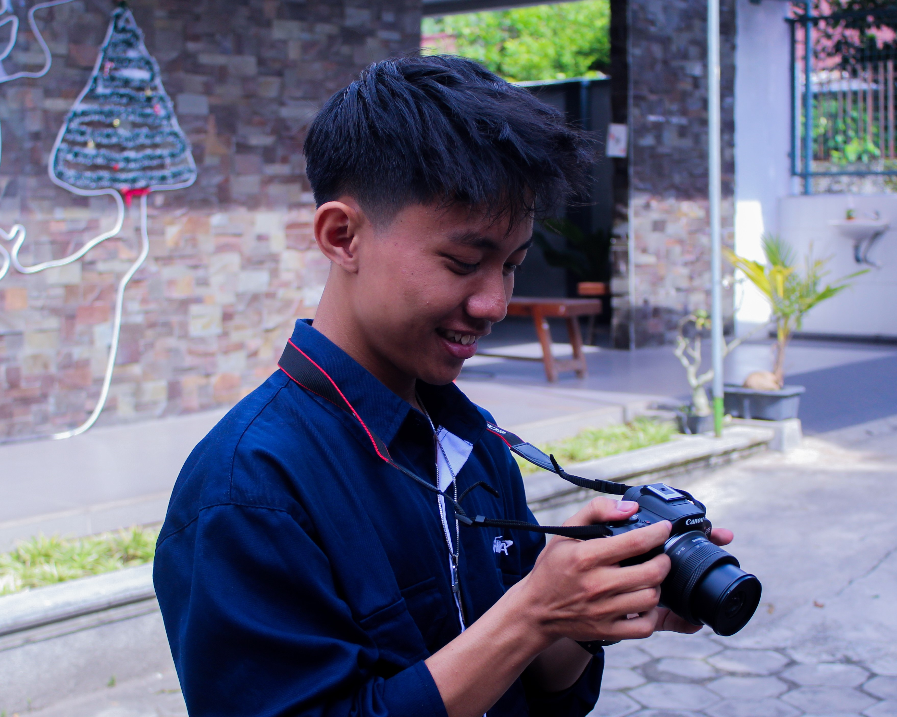

My Skill

Photography
Aku mulai belajar fotografi di tahun 2022, berawal dari ajakan teman untuk bergabung suatu perkumpulan. Dia berkata bahwa tidak apa-apa kalau belum bisa, nanti diajarin. Sejak saat itu aku menjadi suka dengan dunia fotografi dan mulai mendalaminya, mulai dari segitiga eksposure dan teknik pengambilan gambar.

Editing Photo
Sejak aku mulai mahir photography, aku mulai belajar mengenai editing foto guna membuat hasil foto yang diambil menjadi bisa menjadi lebih bagus lagi karena pencahayaan, satruasi, warna, dan lain sebagainya telah di modifikasi. Dengan kata lain potensi foto yang diambi dapat di maksimalkan dengan editing.